FaceRecognition
There are some papers about Face recognition and I will discuss the main idea of them.
1.”Learning a similarity metric discriminatively, with application to face verification”
The paper presents a method for training a similarity metric from data. The idea is to learn a function that maps input patterns into a target space. The learning process minimizes a discriminative loss function that drives the similarity metric to be small for pairs of faces from the same person, and large for pairs from different persons(The basic idea of metric learning) And it use siamese architecture meaning that the learned parameter is used to process both inputs. The workflow of the algorithm are as follows:
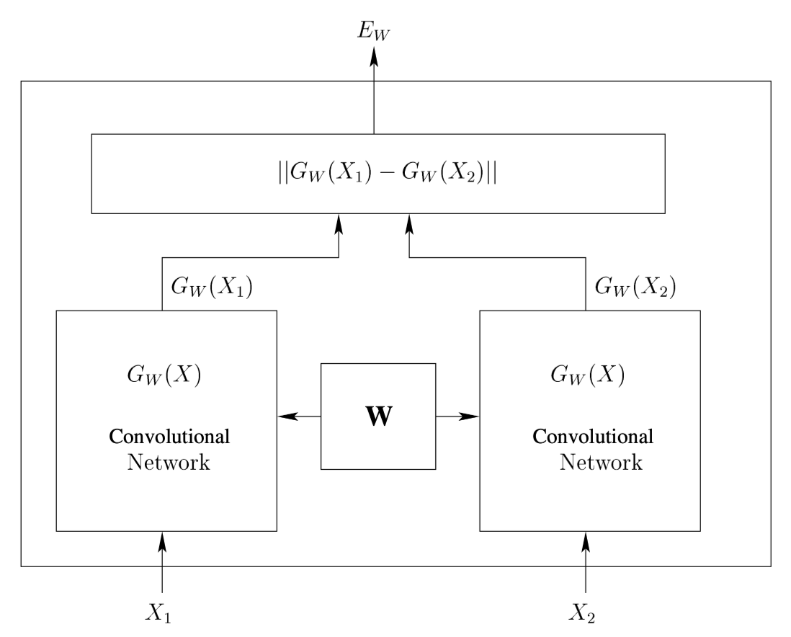
And it adds a margin to avoid the points of the same person are more closed to the other people’s points.
2.”Deep Learning Face Representation by Joint Identification-Verification”
This paper introduces a novel idea: The Deep IDentification-verification features (DeepID2). Identification is to classify an input image into a large number of seen identity, while verification is to classify a pair of images as belonging to the same identity or not. In the training process, the identification supervisory signal tend to pull apart DeepID2 of different identities since they have to be classified into different classes while the vertification supervisory signal tend to pull togather DeepID2 of same identity. The two supervisory signals emphasize different aspects and we should combine them to construct a powerful face recognition algorithm that can do identification and verfificaiton together.
3.”FaceNet: A Unified Embedding for Face Recognition and Clustering”
This paper uses the similar approach as the avove two papers but what is new is that it train the CNN by triple images and it only use 128-dimension target space.(More later)
4.”Deep Face Recognition”
This paper proposes a method to assemble large scale of dataset and use Softmax to accelerate the training of the network
The implementation of my own network to map the 128*64 image to 128 dimension space:
- Construst my own network:
we do this by using the deepsort network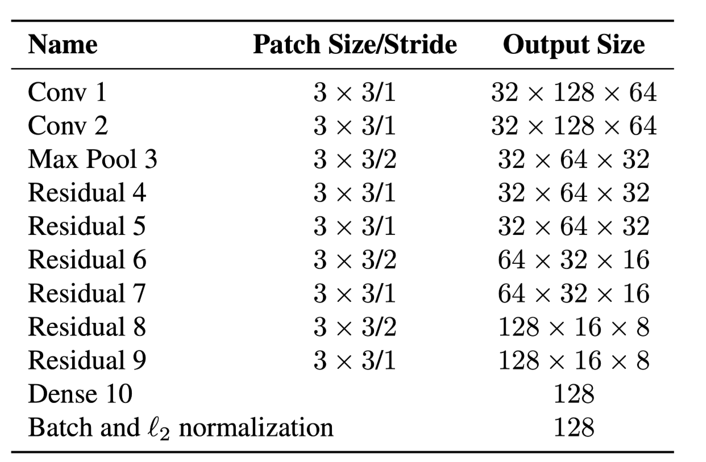 We encountered some questions in the process of accomplish the net.
Firstly when we construct the net, when I use batchnormalization at the end of the network “nn.BatchNorm2d(128)”, there exists a problem “ValueError: expected 4D input (got 2D input)”. This is beacuse the value we get after the net is [1,128] not 4-dimensional we correct nn.BatchNorm2d(128) to nn.BatchNorm1D(128). But after that, there still exists an error: “ValueError: Expected more than 1 value per channel when training, got input size torch.Size([1, 128])” That is because we only input the test data(x = torch.randn([1,3,128,64])) by 1 batch size when we enlarge the batch size greater than 1 we will fix the problem.
Secondly, when I use cv2 to read image from file. The format of the image is narray and the size of it is 128 * 64 * 3 but what my network want is 3 * 128 * 64. So we need to transform the format of the image. We use cv2.split to get the 3 channels of the images and use torch.tensor() to create tensors we need to train the model.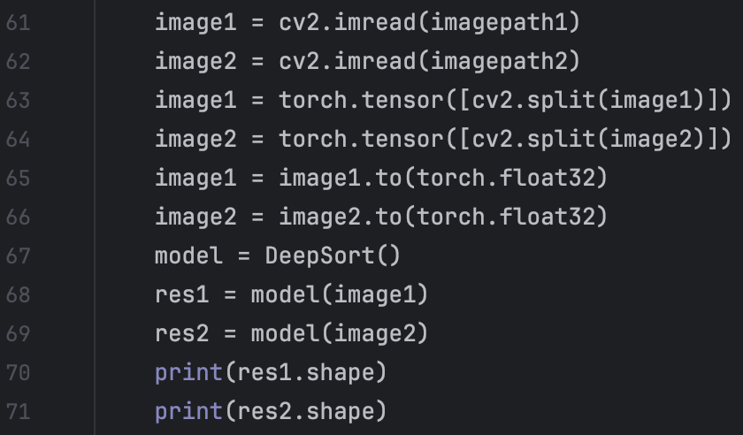 But we encounter another warming: “UserWarning: Creating a tensor from a list of numpy.ndarrays is extremely slow. Please consider converting the list to a single numpy.ndarray with numpy.array() before converting to a tensor. “ We correct it by using numpy.array() as it suggested.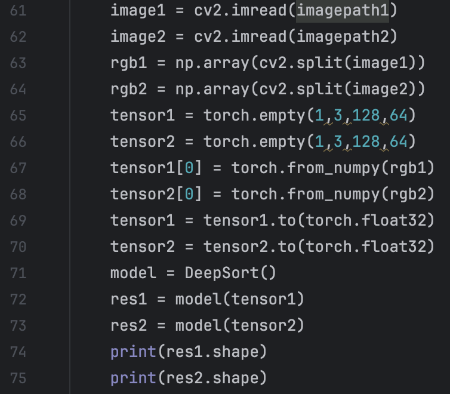 We find that the way I described above is not efficient and practical in the training. We look throught reference and find that use torchvision and torch dataloader function is an efficient and convenience way to load data from folders. 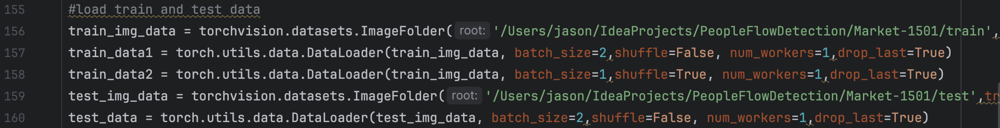 And we encounted problem:“TypeError: default_collate: batch must contain tensors, numpy arrays, numbers, dicts or lists;” The problem is caused by the error in the data. We can solve it by add a transform and use the transfrom as a parameter of the function ImageFolder: We first use two sequence images as the group, but the training result is really bad. all the test iamges are all classified to the last person. The reason for this is that we define the loss function as below: if the two images are from the same person, the loss should be the distance between them; if the two images are from the different person, the loss should be the negative distance between them. But the result is that all the test images are classified to the last learned person. The reason for that, I think, is that since we choose two sequence images as training dataset, most of the training dataset is of same group. The latter the “Person” image trains, the “better” the model will be. So the middle point of the person will be more closed to the output of the model no matter what the input is. So We use triplet loss to train the model. The triplt means that we regard 3 images as a group. 2 of the images are from the same person and the other is from the other person. We construct these 3-group by concaterate two batch. The first one is 2 images from same person and the other is from the other person.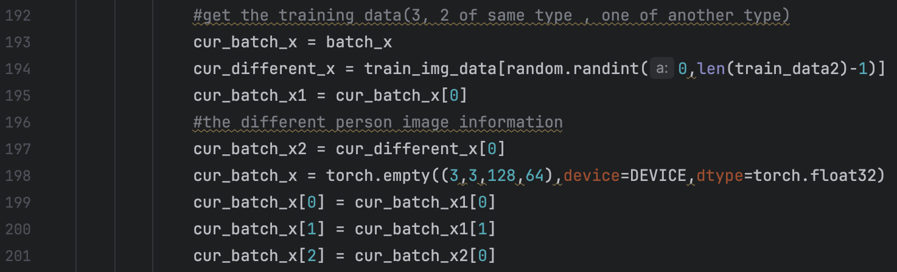 I will tell the details of Triplt loss and its training later. We want to minimize the distance between same person and maximize the distance between different person.
We first use the DeepSort model and of course, we use cuda to accerlate the training process. We encounted problem:“Expected all tensors to be on the same device, but found at least two devices” This is because the data and model we use are not at same device, we can solve it by add a DEVICE that represent the device we want to use and appoint all the data and model we use to the device. We can do this by: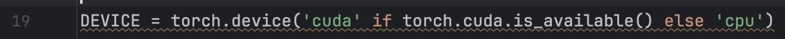 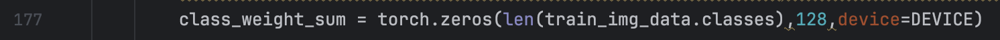 We define the Euclidean Distance between two 128-dimension vector as the loss function. We take the average value of 128-dimension vector of all the images from the same person as the middle point of the person.
We train the model and find that the accuract is extermely low, 1 person image is classified to the correct person in 751 test data. So we do some changes to the model, data processing and the defination of loss function. For model change, we changed the modle to GoogleNet model, for the fundamental model in the FaceNet paper is GoogleNet. The paper use another net which is more complicated and the parameters in the model is 1.6 billion which is to large for me. Since I want to deploy the model in mobile device to detect the human flow. So we choose the smaller net. The another reason is that I have train GoogleNet before and I am more familar to the constructure of the GoogleNet and its layers. For the data processing, the former way we choose two sequence images from the same person and choose another random image from other people. But this time, we choose two random images and choose a image from the first image’s person’s dataset. The former dataset will make the training process learn the images of person from early kind to later kind, i.e. learn the images of person 1 first and person 2 second and so on. This will cause the later learned person image weight point more closed to the final output of the net, making the test images more likely to the later person.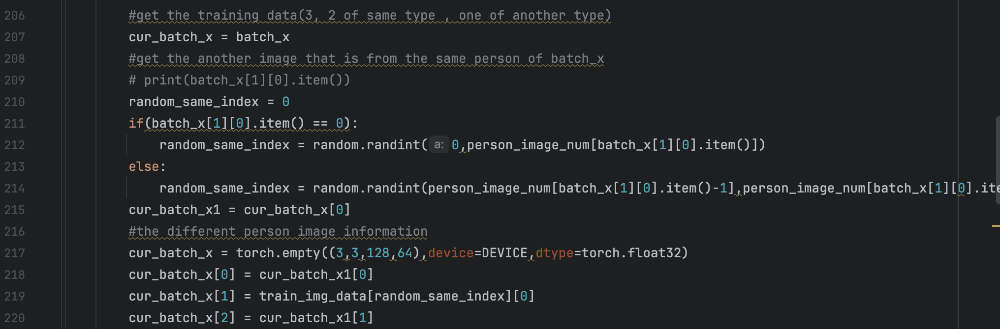 What’s more we changed the loss function. Since we use 3 images to train, we regard them as data[1], data[2] and data[3]. The loss function we used before then are defined as: loss = LossFunction(data[1], data[2]) - LossFunction(data[1],data[3]) - LossFunction(data[2],data[3]) Since the distance between data[1],data[3] and data[2],data[3] is very close, we only ues the first two distance as the loss function, i.e. loss = LossFunction(data[1], data[2]) - LossFunction(data[1],data[3]). The negative before the LossFunction(data[1],data[3]) is that we want to maximize the distance between different group, so we minus it. But we find that this will cause the loss function be a negative number, making the training process hard. Then we use loss = LossFunction(data[1], data[2]) + 1/LossFunction(data[1],data[3]) as the loss function, but the magnitude between the two item is so big that make it meaningless to learning. And when we time 1e10 to the LossFunction(data[1],data[3]) and changes the loss function be: loss = LossFunction(data[1], data[2]) + 1/(1e10 * LossFunction(data[1],data[3])), it is still meaningless to doing so, for the tiny changes in LossFunction(data[1],data[3]) will cause more tiny changes to the parameters in the net.So we adapt the loss to loss = LossFunction(data[1], data[2]) - LossFunction(data[1],data[3]) + alpha where alpha is a constant which represent the max distance between different points of different person. We encountered some problem when we use loss as above. Firstly, since alpha is manually changed during the learning process, this will cause “Trying to backward through the graph a second time (or directly access saved tensors after they have already been freed). Saved intermediate values of the graph are freed when you call .backward() or autograd.grad(). Specify retain_graph=True if you need to backward through the graph a second time or if you need to access saved tensors after calling backward.” and “one of the variables needed for gradient computation has been modified by an inplace operation: [MPSFloatType [128, 1024]] is at version 101; expected version 100 instead. Hint: enable anomaly detection to find the operation that failed to compute its gradient, with torch.autograd.set_detect_anomaly(True).”. To solve these problems, we need to know the root of the problem. The first one is caused that when loss backward second time, the constucture of computation graph has already changed. This change is caused by the change of alpha. Some CSDN blogs suggest that change loss.backward() to loss.backward(retain_graph=True). But this way will cause MPS or CUDA out of memory:“MPS backend out of memory (MPS allocated: 20.38 GB, other allocations: 41.78 MB, max allowed: 20.40 GB). Tried to allocate 256 bytes on shared pool. Use PYTORCH_MPS_HIGH_WATERMARK_RATIO=0.0 to disable upper limit for memory allocations (may cause system failure).” So this solution is not feasible. By the way, we can use “torch.mps.empty_cache()” to And for the second problem I have mentioned before: “one of the variables needed for gradient computation has been modified by an inplace operation: [MPSFloatType [128, 1024]] is at version 101; expected version 100 instead. Hint: enable anomaly detection to find the operation that failed to compute its gradient, with torch.autograd.set_detect_anomaly(True).” it is caused by the inplace operation. To be more spacific, some variables that is the part of loss is changed by the inplace operation. And there are three common ways to handle this. Firstly, replace x += 1 with x = x+1; Secondly, change x[:, :, 0:3] = x[:, :, 0:3] + 1 to x[:, :, 0:3] = x[:, :, 0:3].clone() + 1; Lastly change x[i+1] = torch.sin(x[i]) * w[i] with x[i+1] = torch.sin(x[i].clone()) * w[i]. tensor.clone() can handle some questions but it can not solve my question here. For the solution, we can use constant.detach().fill_(value) to change variable constant value to value. For the underline knowledge, there are two circumstance where we can not use inplace operation. 1.Leaf tensor that is needed to get gradiant(i.e. requires_grad = True). 2. Tensors that needed to use in the process of loss function backward. The core of handling is change the version of the variable that share location with the problem variable and requires_grad = False. All in all, pytorch is not recommanded for inplace operation and inplace operation will cause sacrifice of performance..
And we do some tiny adjustment to the details of the model and data. First we count number of each person’s images. It is calculated by the following way: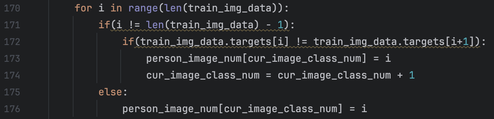 We can calculate the number of images of i-th person by “person_image_num[i+1] - person_image_num[i]”. This will bring me a lot convenience in the later process of calculating each person’s weight point. At the same time, we cancel the normalization of the output of the net. We think that if we restrict the output of the net to 128-dimensional sphere, the distance between dfferent class is tiny thus are more likely to misjudgment. So cancel the normalization of the outout is enlarge the magnitude of output to some degree. Meanwhile, we modeify the way we use data to train. We use the combination of two groups as the training data. We also use triplet to train. To be more specific, we use two groups to combine. Assume the first group is to derive two same person’s images and the second is to derive different person’s image. First group has m images and the second has n images. Then we have Cm2 * Cn1 possible combination. We use them to train the model. Relevant code are as follows: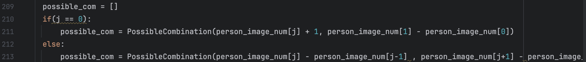. And we modify the loss function to loss = LossFunction(data[1], data[2]) / LossFunction(data[1],data[3]). And finally, we calculate each person’s weight after the model training.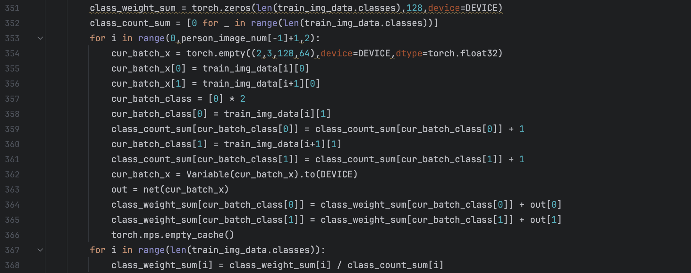
The fundamental request for the net is minimizing the distance of two images from same person. By achieving this, we can guarantee that in the tracking process, the person in different frame will be classified to same class.
I tried to use equation “loss = LossFunction(data[1], data[2])” as the loss function, but the learning effect is very low and use the trained model to map the input images from same person to 128-dimensional. We find that the distance between same person images are small but distance bwtween different person images are small too and sometimes is smaller than the former. I think I should do some readings concerning loss function to design a better loss function.
Additional Work:
Upload PyCharm project to Github
Firstly, we register our own Github account and finish account basic setting. Then we get into our own repository. Then we create a repository with any name you want and set its visibility as pubilc.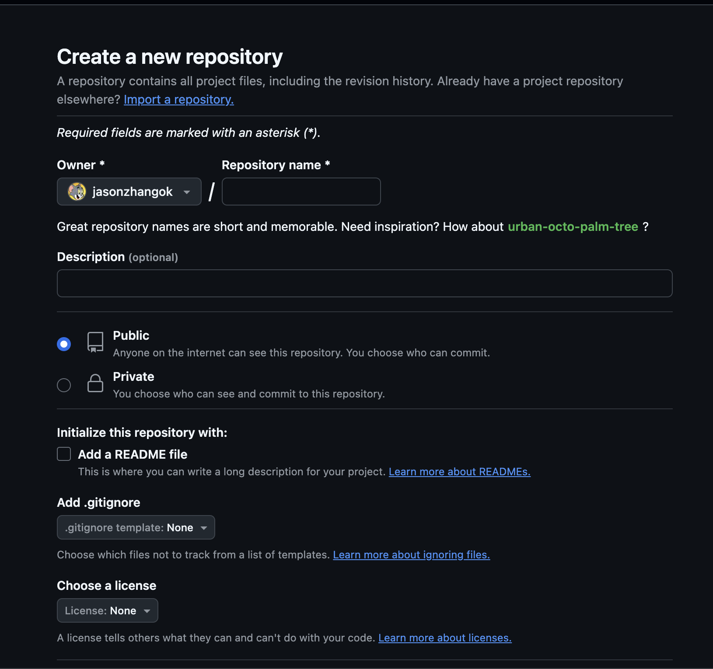After we create repository, we open a terminal windows and get into the folder when you want to put your pycharm project, here I put it in “GithubRepo” folder: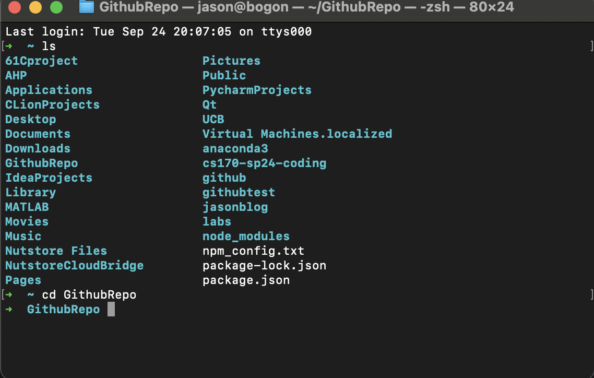 And run: “git clone https://github.com/'Username'/'reponame'.git“ And if success, it will look like this: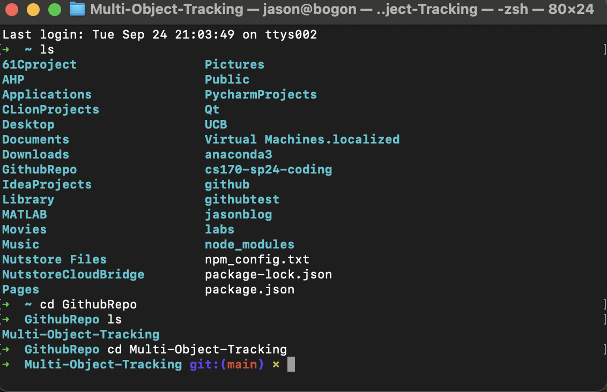And up till now, we finised the connection between our remote github repository and our local computer. And then we copy all the files in our pycharm project to the new folder: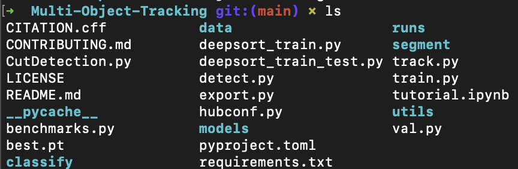 Then we open the folder by PyCharm and cilck commit and then click push: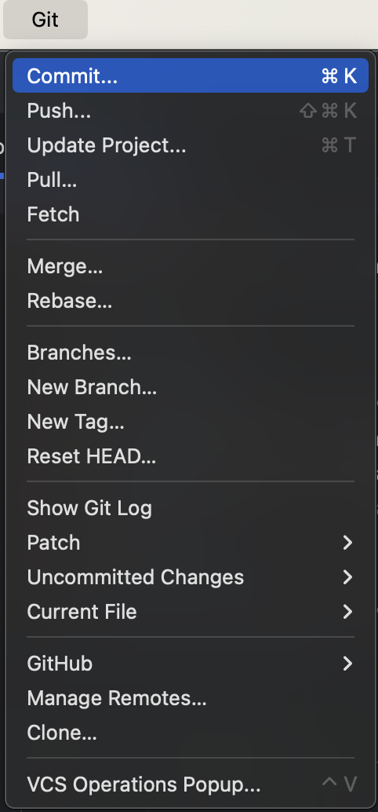Since the we need to push the code to github, it will cause some time to push and there are sometimes when it can not put with fail message: “Failed to eonnect to github.com port443 after 75008ms:couldnot conect to server.” And you may encounter many other problems when you uploade you code. Go to browser and search how to solve it. And here I am great grateful to UC Berkeley. When I was at UC Berkeley, the homeworks and labs there push me to use Github and handle different kinds of problems when I use Github. Before I went to UC Berkeley, I was often reminded by people that I should use Github to make my coding more convenient, but I always postponed this matter. Thanks to that, can I have some Github fundamental knowledge of Github. And I need to learn more about the Github.
Reference:
[1] S. Chopra, R. Hadsell and Y. LeCun, “Learning a similarity metric discriminatively, with application to face verification,” 2005 IEEE Computer Society Conference on Computer Vision and Pattern Recognition (CVPR’05), San Diego, CA, USA, 2005, pp. 539-546 vol. 1, doi: 10.1109/CVPR.2005.202.
[2] Y. Sun, X. Wang, and X. Tang. Deep learning face representation by joint identification-verification. CoRR, abs/1406.4773, 2014.
[3] F. Schroff, D. Kalenichenko, and J. Philbin. Facenet: A unified embedding for face recognition and clustering. In Proc. CVPR, 2015.
[4] O. M. Parkhi, A. Vedaldi, and A. Zisserman. Deep face recognition. In BMVC, 2015
[5] Ke1th. 关于 pytorch inplace operation, 需要知道的几件事 https://zhuanlan.zhihu.com/p/38475183
[6] 强劲九. PyTorch：常见错误 inplace operation https://zhuanlan.zhihu.com/p/518144688
[7] 那抹阳光1994 关于pytorch中inplace运算需要注意的问题 https://www.cnblogs.com/jiangkejie/p/13390377.html
[8] Steven灬 使用 Pycharm 将代码上传到GitHub上详细图解 https://blog.csdn.net/weixin_40547993/article/details/90440420#:~:text=%E4%BD%9C%E4%B8%BA%E4%B8%80%E4%B8%AA%E6%96%B0%E6%89%8B%EF%BC%8C%E4%BD%A0